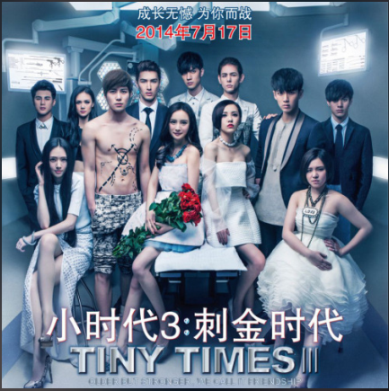

时间煮雨
歌手：
吴亦凡
专辑：
小时代
[00:01.12]时间煮雨 - 吴亦凡 [00:04.21]词：郭敬明,落落 [00:07.21]曲：刘大江 [00:09.06] [00:11.20]编曲：黄毅,陶华 [00:14.44] [00:26.14]风吹雨成花 [00:30.10] [00:32.22]时间追不上白马 [00:35.95] [00:37.30]你年少掌心的梦话 [00:42.42]依然紧握着吗 [00:46.61] [00:49.10]云翻涌成夏 [00:52.44] [00:54.80]眼泪被岁月蒸发 [00:58.74] [01:00.42]这条路上的你我她 [01:04.97]有谁迷路了吗 [01:09.56] [01:14.80]我们说好不分离 [01:19.23]要一直一直在一起 [01:23.26] [01:25.78]就算与时间为敌 [01:30.41]就算与全世界背离 [01:35.22] [01:48.50]风吹亮雪花 [01:52.07] [01:54.09]吹白我们的头发 [01:58.57]当初说一起闯天下 [02:04.11]你们还记得吗 [02:08.50] [02:11.08]那一年盛夏 [02:14.42] [02:16.73]心愿许的无限大 [02:20.22] [02:22.31]我们手拉手也成舟 [02:26.72]划过悲伤河流 [02:31.61] [02:36.52]你曾说过不分离 [02:40.84]要一直一直在一起 [02:46.07] [02:47.80]现在我想问问你 [02:52.17]是否只是童言无忌 [02:56.69] [02:57.77]天真岁月不忍欺 [03:03.34]青春荒唐我不负你 [03:08.80] [03:10.11]大雪求你别抹去 [03:14.68]我们在一起的痕迹 [03:19.32] [03:21.91]大雪也无法抹去 [03:26.50]我们给彼此的印记 [03:30.87] [03:33.14]今夕何夕 [03:36.68] [03:38.46]青草离离 [03:42.25] [03:44.33]明月夜送君千里 [03:49.13]等来年 [03:50.62]秋风起